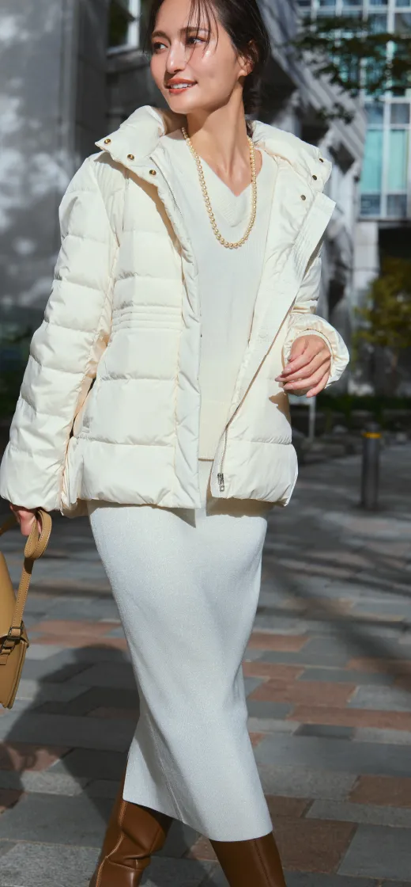
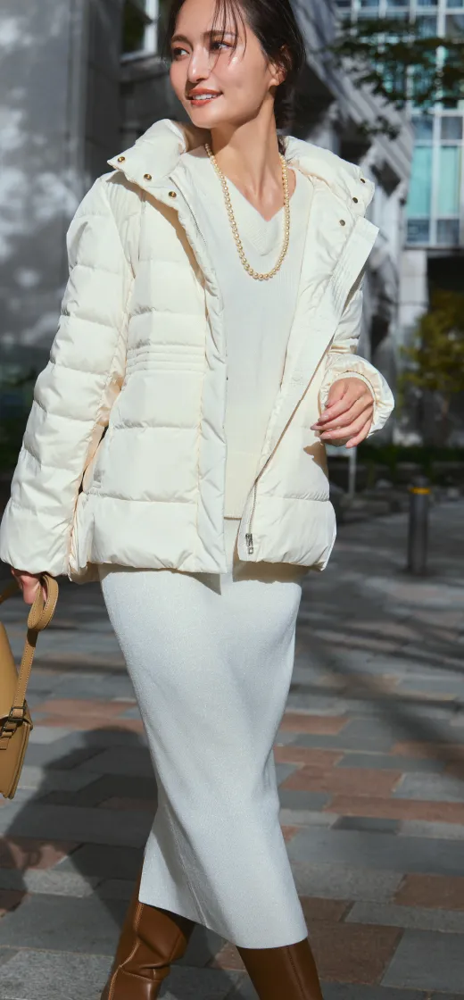
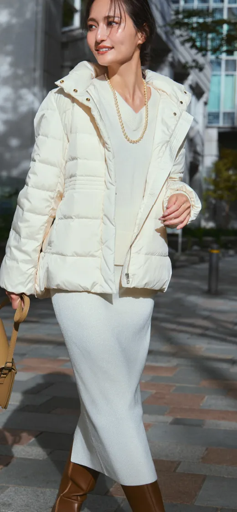
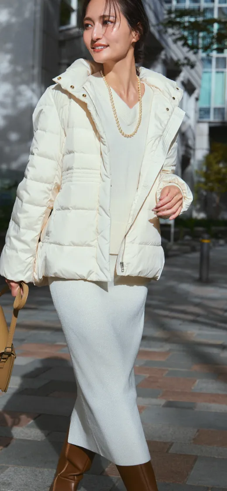

 


さまざまなシーンで着回せる万能さ、
ニットと組み合わせるだけで
今っぽい着こなしが叶う流行のラメ素材を、
大人のワードローブに合わせやすい
ニットスカートに落とし込みました。


モデルの琴子さんもまとった瞬間に思わず “ 欲しい！”と呟いた、 ブラック×ゴールドラメのコラボニットスカート。 ホリデーシーズンのフォーマルなシーンにも大活躍！ ラクーンニットとのワンツーコーデでもしっかり映える、 素材のパワーで新鮮な着こなしを楽しんで♡

ボリュームのあるダウンコートとも、 美人なIラインシルエットで好バランス♡ホワイトのワントーンでも、 スカートのラメで自然と奥行きのあるスタイルが完成。 これからの季節に合わせたいロングブーツと好相性でエレガントに仕上がるスカートの絶妙な丈感も、 試行錯誤をしたポイントです。

メンズライクなツイードジャケットを相棒に、 エレガントなシアーブラウスでニットスカートを通勤仕様にシフト。 Oggiコラボのラメニットスカートは、 大人のシンプルワードローブにもすっとなじむように、 少し肉厚なのにキレよく着こなせるデザインにとことんこだわりました！


2024.9.3 / 2024.9.26
Model : KOTOKO YAMAGA
Photographer : KENTARO WATANABE / SHINTARO
Hair&make : AKEMI KIBE
Stylist : CHIKA WATANABE
Editor : HIROKO SUGA
Web Design : Afureru inc.
Web Development : HIROKO IKEDA
Production : EUREKA.Co.Ltd